The main impact of a 200 basis-point (2.00 percentage-point) rise in United States interest rates on the Netherlands is a 0.05% drop in GDP by the 11th quarter — a limited spillover for a small, open economy that ranks 13th of the countries modelled by absolute GDP effect and sits in the "minimal" band. The shock is a US monetary tightening, not a domestic one, so the Dutch policy rate never moves (it is flat at 0.0 percentage points across all twenty quarters). What the Netherlands imports is tighter global financial conditions, a stronger currency, and weaker external demand, and those channels do the work here.
On demand and trade, the domestic components soften only modestly. Household consumption peaks at −0.03% below baseline in Q12 and is still −0.01% down by Q20. Private investment is the weakest domestic component, peaking at −0.15% in Q11 as the cost of capital rises, and fading only to −0.05% by Q20. Net exports — the trade balance, since this model does not split imports from exports — actually improve, peaking at +0.17% of GDP in Q15 and holding near +0.16% at Q20, which is the offset that keeps the overall GDP hit so small. Government spending drifts up slightly, peaking at +0.01% in Q11, and government debt rises by a peak of +0.008% of GDP in Q18, a rounding-error-sized deterioration.
The external and FX picture is the clearest transmission channel. Currency strength — the real exchange rate — appreciates steadily, peaking at +0.64% above baseline in Q15 and still +0.61% at Q20. That stronger real exchange rate lines up exactly with the net export gain: a more competitive-looking real rate here reflects relative price movements that improve the trade balance even as global demand cools, so the two series move together rather than against each other.
In the labour market, employment falls to a peak shortfall of −0.03% in Q15 and remains −0.03% below baseline at Q20. Unemployment rises by a peak of +0.03 percentage points in Q14, easing to +0.02 points by Q20. Real wages, by contrast, rise throughout, peaking at +0.16% above baseline in Q19 — the real wage gain comes from falling inflation rather than from nominal pay strength, and it persists to the end of the horizon.
On prices, CPI inflation rises early, peaking at +0.04 percentage points in Q8, then fades and turns negative by Q18, ending at −0.002 points in Q20. Domestic inflation follows the same arc, peaking at +0.03 points in Q8 and turning negative in Q18. Firms' marginal cost falls steadily, peaking at −0.03% below baseline in Q11 and remaining −0.01% down at Q20 — the disinflationary pull from weaker activity dominates the early price bump.
Financial conditions tighten sharply in asset prices even though the local policy rate is unchanged. The 2-year, 5-year, and 10-year government yields are all flat at 0.0 percentage points throughout, so the entire yield-curve response is absent in this model. Bond prices nonetheless fall, peaking at −0.57% below baseline in Q8 before recovering to −0.02% by Q20 — the discount-rate effect. Equity prices fall to a peak of −0.31% in Q8 and remain −0.06% down at Q20. Tobin's Q, the value of installed capital, peaks at −0.11% in Q11 and stays −0.03% below baseline at Q20. House prices decline gradually, peaking at −0.05% in Q19. Bank credit supply contracts to a peak of −0.02% in Q17, and lending spreads widen by a trivial +0.0002 percentage points at peak — a negligible credit-cost response.
Sectorally, services GDP peaks at −0.04% below baseline in Q11 and is −0.01% down at Q20. Manufacturing GDP is hit far harder, peaking at −0.19% in Q15 and still −0.18% below baseline at Q20 — the tradable, rate-sensitive sector absorbs most of the external shock. The capital stock barely moves, peaking at −0.008% below baseline only at Q20, since investment weakness takes years to show up in the installed capital measure.
On timing, the GDP hit is largest at −0.05% in Q11, and it has not faded by Q20: the path is still −0.02% below baseline at the end of the horizon, with no sign change and no quarter flagged as "mostly faded." The equity and bond-price responses peak earlier, around Q8, and the currency and net-export responses peak later, around Q15, so the drag is persistent rather than transitory.
These are model impulse responses to a 200 basis-point US rate rise, measured against a baseline in which no such shock occurs — not forecasts, and not trading advice. They describe how the Netherlands' modelled economy deviates from its own baseline path, nothing more. Number check vs JSON: GDP peak -0.05%, CPI 3y +0.34pp, equity peak -0.31%.
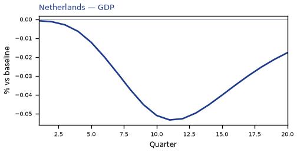
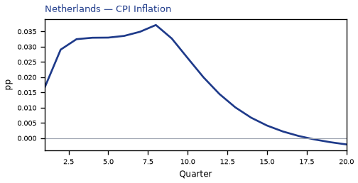
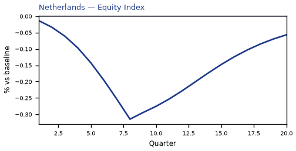
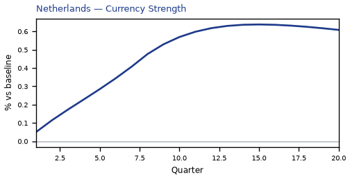
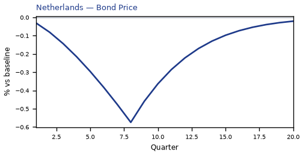
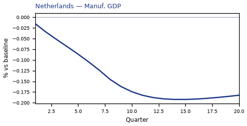
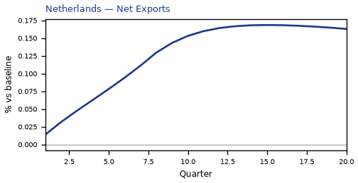
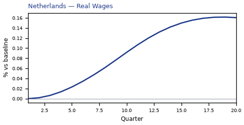
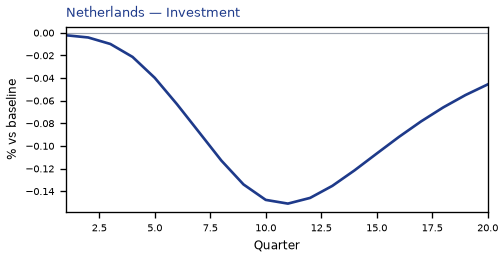
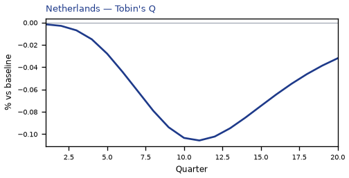
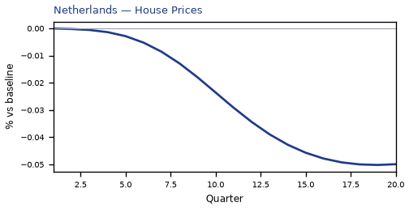
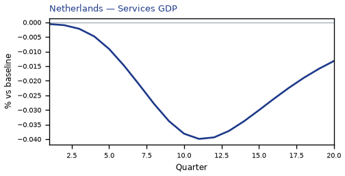
source=live · global_macro_v5 · contract v6 · Q1–Q20 JSON · not financial advice